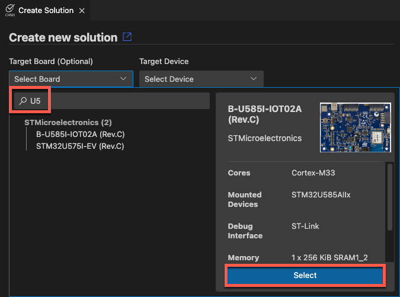

Create an embedded project
This chapter explains how to create a CMSIS solution-based application.
Create a new solution
In the  CMSIS view, click Create a New Solution to open the
Create Solution view.
CMSIS view, click Create a New Solution to open the
Create Solution view.
Note
If you already have a solution opened in your workspace and want to create a new one in the same workspace, move your cursor over the three dots ... in the CMSIS view, then click Create a Solution.
Click the Target Board (Optional) drop-down list. Enter a search term (here: "mcx"), and then select a board. The details of the board that you selected display.

Click Select. By default, the Target Device drop-down list shows the name of the device mounted on the board that you selected.
Note
Alternatively, you can directly select a device in the Target Device drop-down list, without selecting a board first.
Select a template, a reference application, or an example
Select one of the following options from the drop-down list. The options available depend on the board or device selected previously. If there are too many examples, enter a search term and then select an example.

Templates
Templates help you to get started without application-specific code.
-
Blank solution: Start a project from scratch with an empty
main.cfile and the CMSIS device startup component selected -
TrustZone solution: If the board or device that you selected is compatible, you can use TrustZone and define whether projects in the solution use secure or non-secure zones
Reference applications
Reference applications show the usage of middleware, software libraries, and custom code that can run on many different target hardware boards. Examples display only if you selected a board and a software layer is available for that board. Reference applications are not dependent on specific hardware. You can deploy them to various evaluation boards using additional software layers that provide driver APIs for specific target hardware. Layers are provided using CMSIS-Packs.
Reference applications are available with the MDK-Middleware. These examples show you how to use software components for IPv4 and IPv6 networking, USB Host and Device communication, and file system for data storage. See MDK Middleware Reference Applications and the MDK-Middleware repository and documentation for more details.
Other reference applications that illustrate how to match sensor shields and boards are also available with the Sensor SDK pack. The examples use board and shield layers. See Sensor Reference Applications and the Sensor-SDK-Example repository for more details.
Reference applications that use socket layers are also available. See the AWS MQTT demo as an example.
Csolution examples
CMSIS solution examples are targeted at a specific board or Fixed Virtual Platform (FVP) model. The examples are fully configured and ready for use.
µVision examples
Use a µVision example in *.uvprojx format as a starting point. µVision examples are converted automatically.
Configure the solution
Depending on the example/template application you have chose, you might be presented with a view that allows you to select a compiler toolchain and/or one or more software layers.
Refer to configure a solution for more information.
Specify solution folders
Before creating the project, the solution's folder name and location need to be set up.
Solution Sub Folder
After you have selected your solution template, specify a Solution Sub Folder where the solution files are stored.
Solution base folder
-
Click Browse next to the Solution Base Folder field and choose where to store the solution subfolder using the system dialog box.
-
With the Initialize Git repository checkbox, you can initialize the solution as a Git repository. Clear the checkbox if you do not want to turn your solution into a Git repository.
-
Select the Show project opening options checkbox to decide how to open the solution (in the same window, a new window, added to the current workspace).
-
Click Create.
The extension creates the solution and automatically converts examples that are available only in *.uvprojx format. Check the Output tab. If there are any conversion errors and warnings, they display in the CMSIS Solution category. You can also check the uv2csolution.log file.
The following files are created for the solution:
- A
<solution_name>.csolution.ymlfile. - One or more
<project_name>.cproject.ymlfiles, each available in a separate folder.- For reference applications only, each
cproject.ymlfile contains a$Board-Layer$variable. - For reference applications with sensor shields, each
cproject.ymlfile contains a$Shield-Layer$variable. - For reference applications with a socket layer, each
cproject.ymlfile contains a$Socket-Layer$variable. These variables are not yet defined.
- For reference applications only, each
- A
cdefault.ymlfile containing default toolchain setting for the selected toolchain. - A
<solution_name>.cbuild-idx.ymlfile which contains overall information for the application. - A
<solution_name>.cbuild-pack.ymlfile listing all the packs that are used by the application. Missing CMSIS-Packs are installed automatically. - A
<solution_name>.cbuild-set.ymlfile which specifies the context set of projects, target-types, and build-types that are used to generate the application image - A
<solution_name>+<target_name>.cbuild-run.ymlfile which contains a build description of a singlecproject.ymlinput file for each context. - A main
<filename>.ctemplate file for each project. - A
vcpkg-configuration.jsonfile to download required tools automatically.
Caution
If you see this warning: Click Show output to configure the solution. You can add board, shield, or socket layers to your reference application. You can also select a compiler for reference applications and other solution types.
Depending on the selected example, you might need to configure the solution before you can build the project.